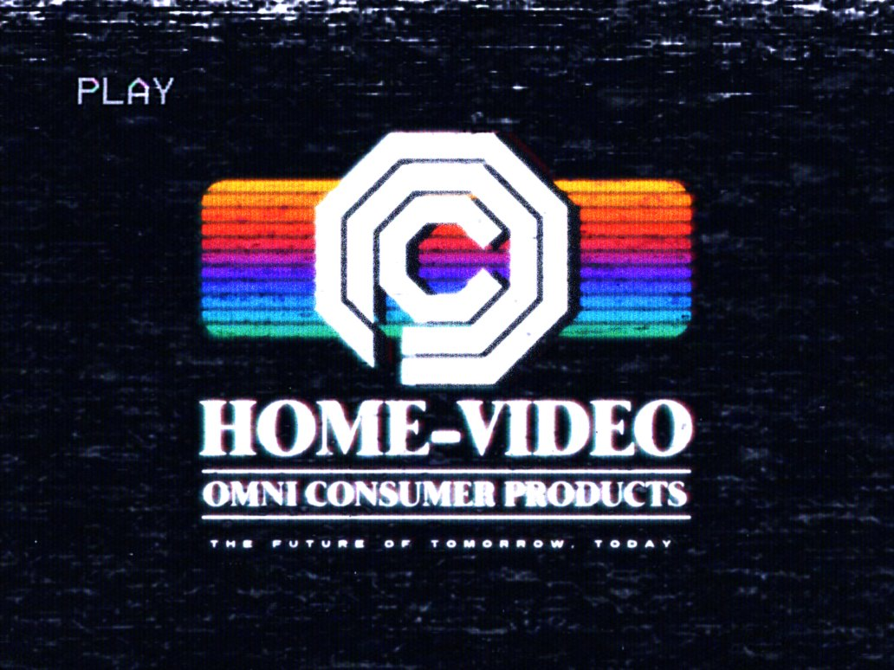
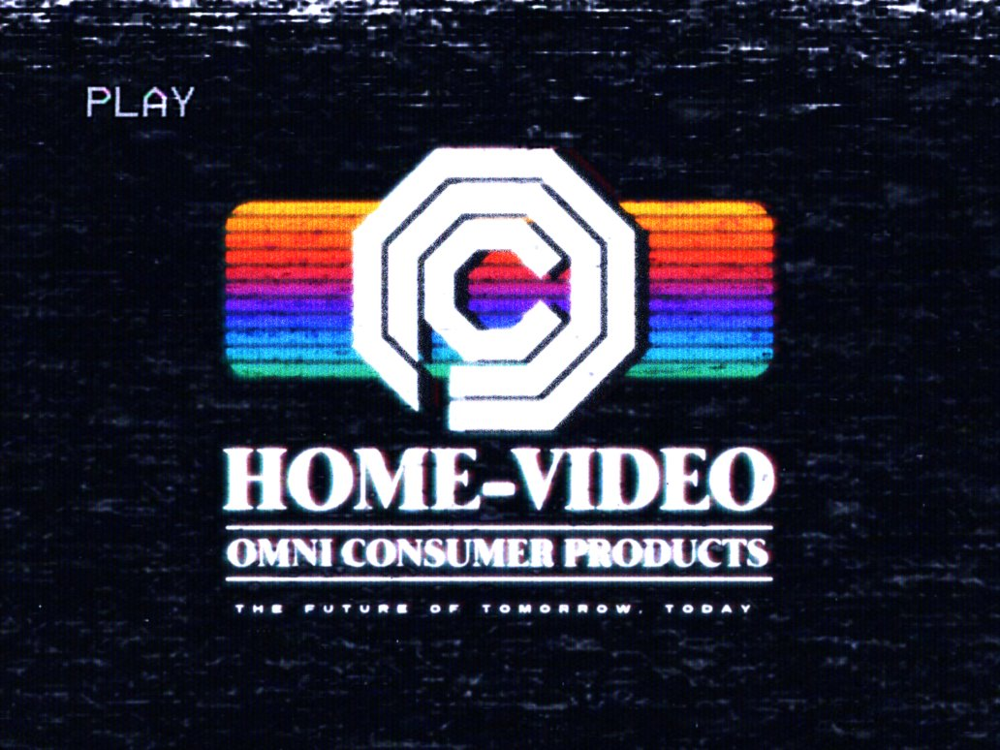

Jones' Unveiling
Jones gave a fantastic speech to the board during ED-209's unveiling.
We will meet each new challenge with the same aggressive attitude.-Dick Jones CEO

The Future of Law Enforcement... ED-209 are a fully-automated series of peacekeeping machines created by Omni Consumer Products. Currently, the units are programmed for urban pacification, but OCP has also negotiated contracts with the military for use in war. It's armed with three automatic cannons, two on the left platform, one on the right platform with an auto-shotgun and a rocket launcher capable of firing three rockets. It also has additional combat programming enabling it to melee attack at closer ranges. Its speech center can synthesize human voices for peacekeeping matters, or animal sounds when injured or angry (it growls like a jaguar when enraged and the one who fought RoboCop [on two occasions] squealed like a pig when it fell down the flight of stairs and couldn't get back up), possibly for use on the battlefield in a similar application to a battle siren.
OCP... a mega-corporation that creates products for virtually every consumer need, and enters into endeavors normally deemed non-profit, and even has plans to manufacture an entire city to be maintained exclusively by the corporation.


 



OCP seeks to fully privatize Detroit, Michigan into Delta City, a manufactured municipality governed by a corporatocracy, with fully privatized services — such as police — and with residents exercising their representative citizenship through the purchase of shares of OCP stock. They also serve as part of the military-industrial complex; according to OCP executiveDick Jones, We practically are the military.
Delta City is OCP's master plan for the ruinous expanse of crime-infested sprawl of Old Detroit, conceived by the "Old Man." His dream is for an efficient, clean and harmonious city, maintained and serviced by OCP and subdivisions, an unending project with unending rewards, policed by ED-209s, RoboCops, and the OCP-funded Detroit Police Department.
Six months before the planned groundbreaking, labor leaders agreed to sanction construction of Delta City, a project that would create about a million new jobs, but the citizens demanded protection from the hound of criminals that lurked the city. Vice President Bob Morton assured them that Security Concepts estimated that crime would be annihilated in a month, thanks to RoboCop.


The Enforcement Droid Series 209 was Jones' pet project. As a ruthless silver-haired fox and opportunist, fiercely competitive and totally amoral, Jones will do anything to eliminate any competition with him and his project, even if it means murder. As muscle, and to carry out any extra jobs outside of the boardroom, Dick Jones had a violent and infamous ace up his sleeve in the form of crime boss Clarence Boddicker and his band of thugs.

After the many weeks of development, Morton dramatically unveiled RoboCop to the development team as a celebration. The cyborg was quickly loaded into a truck and his various equipment was stowed in a convoy of vans, bound for the Metro West precinct. Bob personally oversaw, with glee, the testing of RoboCop's marksmanship, tracking and record/playback functions, then ordered him to recite his Prime Directives. Bob was pleased, and RoboCop was pronounced ready for the field.
Hob is a very young and powerful member of the Nuke Cult. Despite his age, Hob is a ruthless and violent hoodlum, adept at both hand-to-hand fighting and all firearms, from pistols to heavy weapons. As well as his formidable fighting skills, Hob is also an excellent businessman, able to manage and control a sizeable group of people many times his age, and an intelligent thinker.